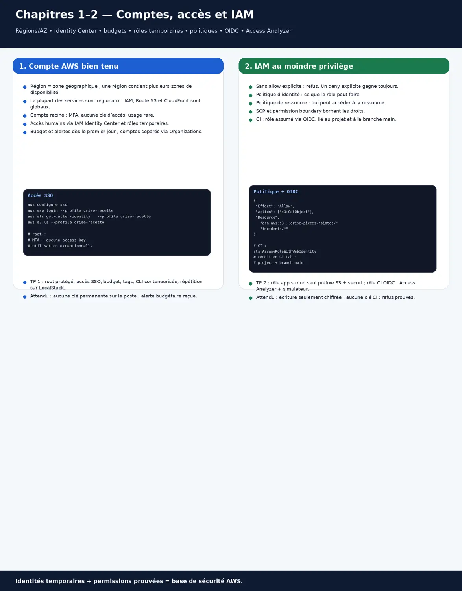
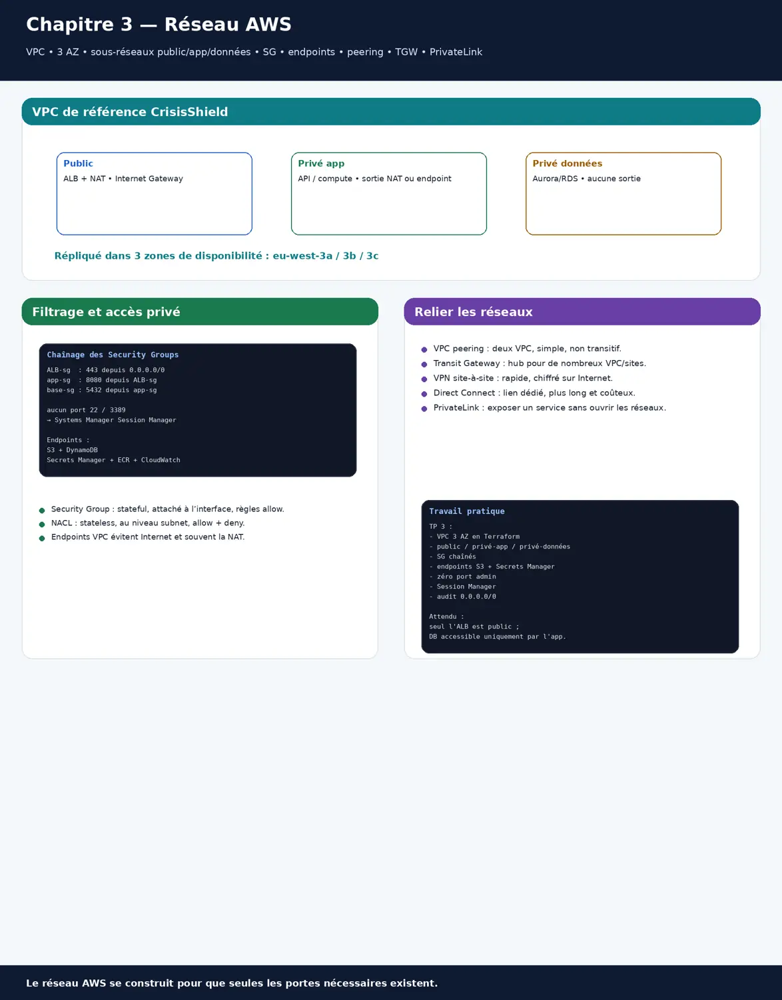
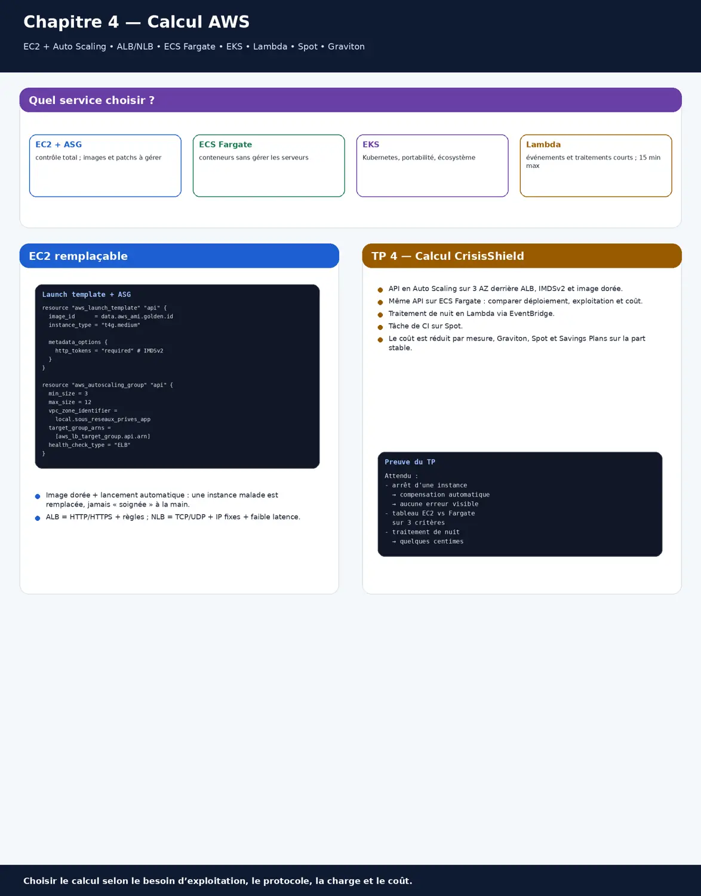
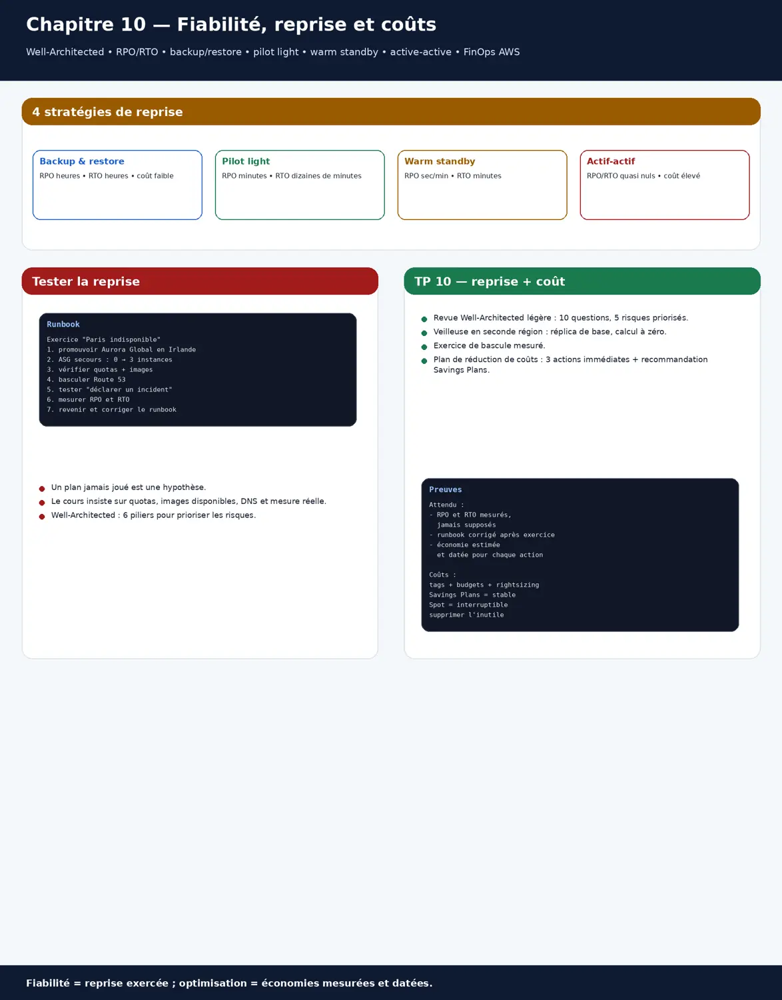

Onze chapitres pour maîtriser AWS en profondeur : comptes, régions et facturation, IAM et rôles, réseau VPC, calcul (EC2, ALB, ECS, EKS, Lambda), stockage et sauvegardes, bases de données (Aurora, DynamoDB), intégration par événements (SQS, SNS, EventBridge, Step Functions), infrastructure comme code et organisation multi-comptes, observabilité et exploitation, fiabilité, reprise et coûts, architectures de référence, migration et préparation aux certifications. Fil conducteur : CrisisShield ; commandes en conteneur et LocalStack pour s'entraîner sans frais ; chaque chapitre a ses exercices corrigés et un travail pratique avec correction type.
≈ 50 h de travail · prérequis : bases réseau et Linux, Docker ; approfondit le niveau 4 du parcours et le cours Cloud.
Démarrer sur AWS : comptes, régions, accès, facturation
En 30 secondes
AWS se découpe en régions (Paris : eu-west-3), chacune composée de plusieurs zones de disponibilité ; la plupart des services sont régionaux, quelques-uns globaux (IAM, Route 53, CloudFront).
Le compte racine ne sert qu'à de rares opérations : on le protège (MFA, pas de clé d'accès) et on travaille avec des identités fédérées via IAM Identity Center.
Un budget avec alertes dès le premier jour ; plusieurs comptes (production, recette, sandbox) regroupés dans AWS Organizations.
Le compte racine a tous les droits et ne se limite pas : on le protège par MFA, sans clé d'accès, et on travaille par identités fédérées et rôles temporaires.
À la fin de ce chapitre, tu sauras
Situer régions, zones et services globaux
Sécuriser le compte racine et accéder par IAM Identity Center
Piloter la facture avec budgets et alertes
Régions, zones, services
Une zone de disponibilité regroupe un ou plusieurs centres de données indépendants ; déployer sur trois zones protège d'une panne locale. Le choix de la région dépend de la latence, des exigences de localisation des données et des services disponibles.
Accéder correctement
Tout en conteneur : alias aws='docker run --rm -it -v "$HOME/.aws:/root/.aws" -v "$PWD:/aws" amazon/aws-cli' ; pour s'entraîner sans compte ni facture, LocalStack en Compose.
# profil SSO (IAM Identity Center) : identifiants temporaires, pas de clé stockée
aws configure sso # une fois : URL du portail, région, compte, rôle
aws sso login --profile crise-recette
aws sts get-caller-identity --profile crise-recette
aws s3 ls --profile crise-recette
# compte racine : MFA matérielle, aucune clé d'accès, adresse e-mail d'équipe, utilisé pour quelques tâches seulement
La facture sous contrôle
Un budget mensuel avec alertes à 50, 80 et 100 %, l'Explorateur de coûts chaque semaine, des étiquettes obligatoires (projet, environnement, équipe) : on sait qui dépense quoi avant la surprise.
Un développeur utilise le compte racine au quotidien, sans MFA, avec une clé d'accès sur son poste. Priorités ?
Corrigé
Supprimer la clé d'accès racine, activer une MFA matérielle, créer des accès nominatifs par IAM Identity Center avec des rôles adaptés, puis vérifier dans CloudTrail qu'aucune utilisation suspecte n'a eu lieu.
Exercice 1.2
Question d'entretien : pourquoi plusieurs comptes AWS ?
Corrigé
Pour isoler les environnements et les équipes : une erreur ou une compromission reste dans son compte, les factures se lisent par compte, et les politiques d'organisation (SCP) s'appliquent par unité.
Travail pratique 1 — Premier compte bien tenu
Protéger le compte racine (MFA, aucune clé) et créer un accès IAM Identity Center pour soi.
Budget avec alertes et étiquettes obligatoires ; première commande CLI en conteneur par profil SSO.
Refaire les manipulations de stockage et de file d'attente sur LocalStack, sans coût.
Correction type
Attendu : aucune clé d'accès permanente sur le poste ; l'alerte budgétaire arrive par e-mail au seuil de test ; les commandes de base passent sur AWS et sur LocalStack.
Chapitre 2Confirmé
IAM en profondeur : identités, rôles, politiques
En 30 secondes
Tout appel à AWS est autorisé par des politiques : celles attachées aux identités, celles attachées aux ressources (compartiment S3, clé KMS, file SQS), et les garde-fous d'organisation.
Les applications et les humains utilisent des rôles aux identifiants temporaires ; les clés d'accès permanentes deviennent l'exception.
Un refus explicite l'emporte toujours ; sans autorisation explicite, c'est refusé ; les limites de permissions et les SCP bornent ce qu'une identité peut recevoir.
Un joker dans une politique transforme chaque erreur en catastrophe : actions et ressources précises, refus explicites sur le sensible, et protection contre la suppression.
À la fin de ce chapitre, tu sauras
Écrire des politiques au moindre privilège avec conditions
Utiliser des rôles pour les humains, les services et la CI
Comprendre l'évaluation des politiques et la diagnostiquer
Une politique au moindre privilège
On part des actions réellement nécessaires, sur les ressources précises, avec des conditions (région, étiquette, chiffrement). IAM Access Analyzer propose des politiques à partir de l'activité réelle et signale les accès externes.
Une instance EC2, un Pod EKS ou une fonction Lambda reçoit un rôle ; la CI (GitLab, GitHub) obtient un rôle par fédération OIDC, sans secret stocké. La politique de confiance dit qui peut endosser le rôle.
# politique de confiance : seule la branche main du projet GitLab peut endosser ce rôle de déploiement
{ "Version": "2012-10-17", "Statement": [ { "Effect": "Allow",
"Principal": { "Federated": "arn:aws:iam::111122223333:oidc-provider/gitlab.com" },
"Action": "sts:AssumeRoleWithWebIdentity",
"Condition": { "StringEquals": { "gitlab.com:sub": "project_path:crise/crisisshield:ref_type:branch:ref:main" } } } ] }
L'évaluation des politiques
<div class="tablewrap"><table><tr><th>Élément</th><th>Effet</th><th>Exemple</th></tr><tr><td>Refus explicite (n'importe où)</td><td>refusé, quoi qu'il arrive</td><td>le filet de sécurité</td></tr><tr><td>SCP de l'organisation</td><td>plafond pour tous les comptes d'une unité</td><td>interdire une région, protéger CloudTrail</td></tr><tr><td>Politique de ressource</td><td>qui peut accéder à cette ressource</td><td>compartiment, clé KMS, file</td></tr><tr><td>Politique d'identité</td><td>ce que l'identité peut faire</td><td>rôle de l'application</td></tr><tr><td>Limite de permissions</td><td>plafond délégué à une identité</td><td>laisser une équipe créer des rôles sans escalade</td></tr><tr><td>Aucune autorisation</td><td>refusé par défaut</td><td>tout est interdit sauf autorisé</td></tr></table></div>

Fiche visuelle : Comptes identity center IAM OIDC
Exercice 2.1
Une politique contient « Action: * » et « Resource: * » « pour débloquer un déploiement ». Que proposes-tu ?
Corrigé
Retirer le joker, relancer avec les journaux CloudTrail ou IAM Access Analyzer pour obtenir la liste réelle des actions, écrire une politique limitée aux ressources concernées, et garder un refus explicite sur les actions sensibles.
Exercice 2.2
Question d'entretien : différence entre politique d'identité et politique de ressource ?
Corrigé
La première dit ce qu'une identité peut faire, la seconde qui peut accéder à une ressource ; pour un accès entre comptes, il faut en général les deux, et un refus explicite dans l'une suffit à bloquer.
Travail pratique 2 — IAM de CrisisShield
Rôle de l'application : lecture et écriture chiffrée d'un seul préfixe S3, lecture d'un secret.
Rôle de déploiement par OIDC pour la CI, limité à la branche main.
Utiliser IAM Access Analyzer et le simulateur de politiques pour prouver les accès et les refus.
Correction type
Attendu : l'application ne peut écrire que chiffré dans son préfixe ; la CI n'a aucune clé stockée ; le simulateur montre les refus attendus sur les autres compartiments.
Un VPC est ton réseau privé dans une région : sous-réseaux publics (passerelle Internet) et privés (sortie par NAT ou aucune), répartis sur plusieurs zones.
Les groupes de sécurité filtrent par instance, avec état ; les listes de contrôle réseau filtrent par sous-réseau, sans état ; les points de terminaison VPC évitent de passer par Internet.
Pour relier des VPC et des sites : peering, Transit Gateway, VPN, Direct Connect ; PrivateLink expose un service sans ouvrir de réseau.
Une instance joignable depuis Internet est attaquée en minutes : les applications vivent en privé, seul l'équilibreur est exposé, et l'administration passe par Session Manager.
À la fin de ce chapitre, tu sauras
Dessiner un VPC multi-zones public et privé
Filtrer avec groupes de sécurité et points de terminaison
Choisir entre peering, Transit Gateway et PrivateLink
Un VPC de référence
Trois zones, dans chacune un sous-réseau public (équilibreur de charge, NAT) et un sous-réseau privé (applications, bases) ; les bases dans un groupe de sous-réseaux privés dédié.
VPC 10.20.0.0/16 (eu-west-3)
zone a : public 10.20.0.0/24 (ALB, NAT) | privé-app 10.20.10.0/24 | privé-données 10.20.20.0/24
zone b : public 10.20.1.0/24 | privé-app 10.20.11.0/24 | privé-données 10.20.21.0/24
zone c : public 10.20.2.0/24 | privé-app 10.20.12.0/24 | privé-données 10.20.22.0/24
routes : public → passerelle Internet ; privé-app → NAT de sa zone ; privé-données → aucune sortie
points de terminaison : passerelle S3 et DynamoDB (gratuits), interface pour Secrets Manager, ECR, CloudWatch
Filtrer
Les groupes de sécurité se référencent entre eux : l'application accepte seulement l'équilibreur, la base seulement l'application ; aucun port d'administration ouvert, l'accès aux machines passe par Session Manager.
ALB-sg : entrée 443 depuis 0.0.0.0/0
app-sg : entrée 8080 depuis ALB-sg
base-sg : entrée 5432 depuis app-sg
aucun port 22 ni 3389 : accès aux instances par AWS Systems Manager Session Manager
aws ec2 describe-security-groups --filters Name=ip-permission.cidr,Values=0.0.0.0/0 --query 'SecurityGroups[].GroupId' # audit des ouvertures
Relier des réseaux
<div class="tablewrap"><table><tr><th>Option</th><th>Pour</th><th>À retenir</th></tr><tr><td>Peering de VPC</td><td>deux VPC, peu nombreux</td><td>pas de transit, plages sans chevauchement</td></tr><tr><td>Transit Gateway</td><td>des dizaines de VPC et des sites</td><td>concentrateur central, tables de routage</td></tr><tr><td>PrivateLink</td><td>exposer un service à d'autres comptes</td><td>sans ouvrir les réseaux entre eux</td></tr><tr><td>VPN site à site</td><td>relier un site rapidement</td><td>par Internet, chiffré</td></tr><tr><td>Direct Connect</td><td>lien dédié, débit et latence garantis</td><td>délai de mise en place, coût</td></tr></table></div>

Fiche visuelle : Vpc subnets security groups connectivite
Exercice 3.1
Les instances applicatives ont des adresses IP publiques « pour les mises à jour ». Que changer ?
Corrigé
Les placer en sous-réseaux privés avec une sortie par NAT (ou des points de terminaison), exposer uniquement l'équilibreur de charge, et administrer par Session Manager ; plus aucune instance joignable directement depuis Internet.
Exercice 3.2
Question d'entretien : groupe de sécurité ou liste de contrôle réseau ?
Corrigé
Le groupe de sécurité est attaché aux interfaces, avec état et règles d'autorisation seulement, référençable par d'autres groupes ; la liste de contrôle réseau s'applique au sous-réseau, sans état, avec autorisations et refus numérotés. On filtre surtout par groupes de sécurité.
Travail pratique 3 — Réseau de CrisisShield
VPC trois zones public, privé-app et privé-données, par Terraform.
Groupes de sécurité chaînés, points de terminaison S3 et Secrets Manager, aucun port d'administration.
Session Manager pour l'accès aux instances ; audit des ouvertures à 0.0.0.0/0.
Correction type
Attendu : seule l'adresse de l'équilibreur est publique ; la base n'accepte que l'application ; l'application lit S3 sans passer par la NAT ; l'audit ne trouve que le port 443 de l'équilibreur.
Chapitre 4Confirmé
Calcul : EC2, équilibreurs, conteneurs, Lambda
En 30 secondes
EC2 fournit des machines virtuelles : on les crée à partir de modèles de lancement, dans des groupes Auto Scaling, pour les remplacer plutôt que les réparer.
Les équilibreurs de charge répartissent le trafic : ALB pour HTTP et HTTPS (règles, en-têtes), NLB pour TCP et UDP à très faible latence.
Pour les conteneurs : ECS avec Fargate (sans gestion de serveurs) ou EKS (Kubernetes) ; pour les traitements courts déclenchés par événements : Lambda.
Une instance soignée à la main ne se reconstruit plus : image dorée, modèle de lancement et Auto Scaling remplacent une instance défaillante en quelques minutes.
À la fin de ce chapitre, tu sauras
Déployer EC2 en Auto Scaling derrière un ALB
Choisir entre EC2, ECS Fargate, EKS et Lambda
Réduire le coût du calcul (dimensionnement, Spot, Graviton)
Auto Scaling derrière un ALB
Le modèle de lancement décrit l'image, le type, le rôle, et impose IMDSv2 ; le groupe Auto Scaling maintient le nombre d'instances saines sur trois zones et suit une métrique cible ; l'ALB n'envoie du trafic qu'aux instances qui passent le contrôle de santé.
<div class="tablewrap"><table><tr><th>Service</th><th>Pour</th><th>À retenir</th></tr><tr><td>EC2 + Auto Scaling</td><td>contrôle total, logiciels particuliers</td><td>on gère les images et les correctifs</td></tr><tr><td>ECS sur Fargate</td><td>conteneurs sans gérer de serveurs</td><td>simple, facturé à la tâche</td></tr><tr><td>EKS</td><td>Kubernetes, portabilité, écosystème</td><td>plus riche, plus à exploiter</td></tr><tr><td>Lambda</td><td>événements, traitements courts, trafic irrégulier</td><td>démarrage à froid, durée limitée à 15 min</td></tr></table></div>
Coûts du calcul
On dimensionne d'après les mesures (Compute Optimizer), on passe aux processeurs Graviton quand l'application le permet, on utilise les instances Spot pour ce qui supporte l'interruption (traitements, CI), et des Savings Plans pour la base stable.

Fiche visuelle : Ec2 alb ecs eks lambda
Exercice 4.1
Une instance de production est « soignée » à la main depuis trois ans. Quel risque, et quelle cible ?
Corrigé
Personne ne sait la reconstruire et elle dérive. Cible : image construite par Packer, modèle de lancement, groupe Auto Scaling, configuration par code ; une instance défaillante est remplacée, jamais réparée à la main.
Exercice 4.2
Question d'entretien : ALB ou NLB ?
Corrigé
L'ALB travaille en HTTP et HTTPS (règles par chemin ou en-tête, WebSocket, authentification OIDC) ; le NLB en TCP et UDP, avec une très faible latence et des adresses IP fixes. On choisit selon le protocole et les besoins de routage.
Travail pratique 4 — Calcul de CrisisShield
API en Auto Scaling (trois zones) derrière un ALB, IMDSv2, image dorée.
Même API en ECS Fargate ; comparer déploiement, exploitation et coût.
Traitement de nuit en Lambda déclenché par EventBridge, et une tâche de CI sur Spot.
Correction type
Attendu : l'arrêt d'une instance est compensé automatiquement sans erreur visible ; un tableau compare EC2 et Fargate sur trois critères ; le traitement de nuit coûte quelques centimes.
Chapitre 5Confirmé
Stockage : S3, EBS, EFS, sauvegardes
En 30 secondes
S3 stocke des objets sans limite : classes de stockage selon la fréquence d'accès, cycle de vie, versioning, chiffrement par défaut, blocage de l'accès public.
EBS est le disque d'une instance (instantanés), EFS un système de fichiers partagé ; chacun a ses cas d'usage et ses coûts.
AWS Backup centralise les sauvegardes (EBS, RDS, DynamoDB, EFS, S3) avec des plans, des coffres et des copies entre comptes ou régions.
S3 ne perd pas les données, mais il exécute fidèlement les erreurs : versioning, cycle de vie et sauvegarde dans un autre compte permettent de revenir en arrière.
À la fin de ce chapitre, tu sauras
Configurer un compartiment S3 sûr et économique
Choisir entre S3, EBS et EFS
Mettre en place des sauvegardes centralisées et restaurables
Un compartiment bien réglé
Blocage de l'accès public au niveau du compte, propriétaire des objets imposé (listes d'accès désactivées), chiffrement KMS, versioning, cycle de vie vers des classes moins chères, et journalisation des accès.
<div class="tablewrap"><table><tr><th>Service</th><th>Pour</th><th>À retenir</th></tr><tr><td>S3</td><td>objets, fichiers, sauvegardes, données</td><td>accès par API, pas un disque</td></tr><tr><td>EBS</td><td>disque d'une instance (base, système)</td><td>une zone, instantanés vers S3</td></tr><tr><td>EFS</td><td>système de fichiers partagé entre instances</td><td>plusieurs zones, plus cher au Go</td></tr><tr><td>FSx</td><td>systèmes de fichiers spécialisés (Windows, Lustre)</td><td>cas particuliers</td></tr></table></div>
Sauvegardes
Un plan AWS Backup sauvegarde chaque nuit les ressources étiquetées, conserve trente jours, copie dans un coffre d'un autre compte, verrouillé contre la suppression ; la restauration se teste chaque mois.
Un script a écrasé 12 000 pièces jointes avec des fichiers vides. Peut-on revenir en arrière ?
Corrigé
Seulement si le versioning était actif : on restaure les versions précédentes. Sans versioning ni sauvegarde, les données sont perdues ; d'où versioning, cycle de vie des anciennes versions et sauvegarde dans un autre compte.
Exercice 5.2
Question d'entretien : comment empêcher toute exposition publique d'un compartiment S3 ?
Corrigé
Blocage de l'accès public au niveau du compte (et dans une SCP pour l'empêcher d'être levé), listes d'accès désactivées, accès par politiques et rôles, et partage ponctuel par URL présignée.
Travail pratique 5 — Stockage et sauvegardes de CrisisShield
Compartiment des pièces jointes : accès public bloqué, KMS, versioning, cycle de vie.
Plan AWS Backup (base, volumes) avec copie dans un compte de sauvegarde.
Écraser volontairement des objets et une table, puis restaurer.
Correction type
Attendu : les objets écrasés sont restaurés depuis leurs versions ; la base est restaurée depuis le coffre de l'autre compte ; le coût mensuel du stockage est estimé par classe.
Chapitre 6Senior
Bases de données : RDS, Aurora, DynamoDB, ElastiCache
En 30 secondes
RDS et Aurora fournissent des bases relationnelles gérées : Multi-AZ pour la disponibilité, réplicas pour la lecture, sauvegardes et restauration à un instant donné.
DynamoDB est une base clé-valeur et document sans serveur : on la modélise à partir des requêtes (clé de partition, clé de tri, index secondaires).
ElastiCache (Redis ou Valkey) met en cache et gère sessions et compteurs ; on choisit chaque base selon les accès, pas par habitude.
Une base dans une seule zone s'arrête à chaque maintenance ou panne : Multi-AZ ou Aurora basculent en une à deux minutes, et l'application se reconnecte seule.
À la fin de ce chapitre, tu sauras
Déployer une base relationnelle hautement disponible
Modéliser une table DynamoDB selon ses requêtes
Choisir la bonne base et le bon cache
RDS et Aurora
En Multi-AZ, une réplique synchrone dans une autre zone prend le relais en une à deux minutes ; Aurora réplique son stockage sur trois zones et accepte jusqu'à quinze réplicas de lecture. On active la protection contre la suppression, le chiffrement et l'authentification IAM.
On liste d'abord les requêtes de l'application, puis on choisit la clé de partition (bien répartie) et la clé de tri ; les index secondaires globaux servent les autres requêtes. Capacité à la demande pour un trafic imprévisible, TTL pour l'expiration, flux pour réagir aux changements.
Requêtes : événements d'un incident par date ; incidents ouverts d'une zone
Table « evenements » : clé de partition incident_id, clé de tri horodatage
Index global « par_zone » : clé de partition zone, clé de tri statut#horodatage
aws dynamodb query --table-name evenements --key-condition-expression "incident_id = :i" --expression-attribute-values '{":i":{"S":"INC-42"}}'
# jamais de Scan pour une requête d'application : une Query sur une clé ou un index
Choisir
<div class="tablewrap"><table><tr><th>Service</th><th>Pour</th><th>Exemple</th></tr><tr><td>Aurora PostgreSQL ou MySQL</td><td>relationnel, transactions, jointures</td><td>référentiel, incidents, facturation</td></tr><tr><td>RDS</td><td>moteurs variés, besoins classiques</td><td>base d'une application existante</td></tr><tr><td>DynamoDB</td><td>clé-valeur à très grande échelle, latence constante</td><td>événements, sessions, compteurs</td></tr><tr><td>ElastiCache</td><td>cache, sessions, classements</td><td>réduire la charge de la base</td></tr><tr><td>Redshift, OpenSearch</td><td>analytique, recherche</td><td>voir le cours Data Platform</td></tr></table></div>
La base RDS de production est en mono-zone ; une maintenance planifiée coupe le service quarante minutes. Que changer ?
Corrigé
Passer en Multi-AZ (ou Aurora) : la maintenance et les pannes basculent sur la réplique en une à deux minutes ; et l'application doit se reconnecter automatiquement.
Exercice 6.2
Question d'entretien : comment choisis-tu la clé de partition DynamoDB ?
Corrigé
À partir des requêtes : une clé avec beaucoup de valeurs bien réparties, qui correspond à l'accès principal ; les autres accès passent par des index secondaires, jamais par des Scan.
Travail pratique 6 — Données de CrisisShield sur AWS
Aurora PostgreSQL en Multi-AZ, mot de passe géré, chiffrement, authentification IAM.
Table DynamoDB des événements avec un index par zone ; requêtes sans Scan.
Provoquer une bascule Aurora et mesurer l'interruption vue par l'application.
Correction type
Attendu : la bascule provoque moins de deux minutes d'erreurs, absorbées par les nouvelles tentatives de l'application ; les deux requêtes DynamoDB passent par Query ; aucun mot de passe dans le code.
Chapitre 7Senior
Intégration et événements : SQS, SNS, EventBridge, Step Functions
En 30 secondes
Découpler, c'est ne plus appeler directement : une file SQS absorbe les pics, un sujet SNS diffuse vers plusieurs abonnés, EventBridge route les événements selon des règles.
Step Functions orchestre des étapes avec reprises, compensations et délais, visibles dans un graphe.
Chaque consommateur est idempotent, a une file des messages en échec et une alerte sur son retard.
Un appel direct propage la panne du plus lent : une file absorbe le pic, le consommateur traite à son rythme, et rien ne se perd.
À la fin de ce chapitre, tu sauras
Absorber les pics avec une file et une file d'échec
Diffuser et router des événements
Orchestrer un processus avec Step Functions
File et diffusion
La réception d'une alerte publie un message ; SNS le diffuse à plusieurs files SQS (notifications, statistiques, archivage), chacune consommée à son rythme. Après trois échecs, le message part dans une file d'échec surveillée.
EventBridge reçoit des événements (des services AWS, de tes applications, de partenaires) et les route par règles vers des cibles : Lambda, files, Step Functions. Il sert aussi de planificateur.
{ "source": ["crise.incidents"], "detail-type": ["IncidentEscalade"], "detail": { "niveau": [{ "numeric": [">=", 3] }] } }
# règle : tout incident escaladé au niveau 3 ou plus → machine à états « ouvrir-cellule-de-crise »
Step Functions
Une machine à états décrit les étapes, les nouvelles tentatives, les erreurs attrapées et les compensations ; chaque exécution est visible et relançable.
Fiche visuelle : Sqs sns eventbridge stepfunctions infrastructure as code
Exercice 7.1
Pendant un pic, le service d'envoi de SMS appelé directement tombe et fait échouer la réception des alertes. Quelle architecture ?
Corrigé
Découpler : la réception publie dans SNS ou SQS et répond tout de suite ; le service d'envoi consomme la file à son rythme, avec nouvelles tentatives, file d'échec et alerte sur le retard.
Exercice 7.2
Question d'entretien : SQS standard ou FIFO ?
Corrigé
Standard : débit quasi illimité, livraison au moins une fois, ordre non garanti ; FIFO : ordre par groupe de messages et dédoublonnage, avec un débit plus limité. Dans les deux cas, le consommateur reste idempotent.
Travail pratique 7 — Chaîne d'alertes découplée
SNS vers trois files SQS avec files d'échec et alertes.
Règle EventBridge sur les escalades de niveau 3 vers une machine à états Step Functions.
Simuler un pic de 10 000 alertes et une panne du consommateur.
Correction type
Attendu : la réception répond toujours en moins de 200 ms pendant le pic ; la panne du consommateur n'entraîne aucune perte, seulement un retard visible ; l'échec d'une étape de la machine à états déclenche la compensation.
Chapitre 8Senior
Infrastructure comme code et organisation multi-comptes
En 30 secondes
Sur AWS, trois voies d'infrastructure comme code : CloudFormation (natif), CDK (du code qui génère du CloudFormation), Terraform (multi-fournisseur).
Une organisation se structure en unités (sécurité, infrastructure, charges de travail) avec des comptes par environnement, des SCP et des journaux centralisés.
Control Tower pose une zone d'atterrissage (landing zone) : comptes de journalisation et d'audit, garde-fous, création de comptes normalisée.
Tout dans un compte, c'est toutes les erreurs au même endroit : des comptes par environnement, des garde-fous d'organisation et des rôles propres à chaque compte.
À la fin de ce chapitre, tu sauras
Choisir entre CloudFormation, CDK et Terraform
Écrire une pile CDK et la déployer en conteneur
Structurer une organisation multi-comptes avec des garde-fous
Trois outils
<div class="tablewrap"><table><tr><th>Outil</th><th>Principe</th><th>À retenir</th></tr><tr><td>CloudFormation</td><td>YAML ou JSON, natif, sans état externe</td><td>verbeux, dérive à surveiller</td></tr><tr><td>CDK</td><td>TypeScript, Java, Python qui génèrent CloudFormation</td><td>abstractions riches, code testable</td></tr><tr><td>Terraform</td><td>HCL, multi-fournisseur, état à gérer</td><td>le plus répandu hors AWS pur</td></tr></table></div>
Une pile CDK
Une pile CDK décrit l'infrastructure en code typé ; cdk diff montre les changements, cdk deploy les applique par CloudFormation. Tout se lance dans un conteneur Node.
// lib/crise-stack.ts
import { Stack, StackProps, RemovalPolicy } from 'aws-cdk-lib';
import * as s3 from 'aws-cdk-lib/aws-s3';
import * as sqs from 'aws-cdk-lib/aws-sqs';
export class CriseStack extends Stack {
constructor(scope: any, id: string, props?: StackProps) {
super(scope, id, props);
new s3.Bucket(this, 'PiecesJointes', { blockPublicAccess: s3.BlockPublicAccess.BLOCK_ALL, encryption: s3.BucketEncryption.KMS,
versioned: true, enforceSSL: true, removalPolicy: RemovalPolicy.RETAIN });
const echec = new sqs.Queue(this, 'NotificationsEchec');
new sqs.Queue(this, 'Notifications', { deadLetterQueue: { queue: echec, maxReceiveCount: 3 } });
}
}
# docker run --rm -it -v "$PWD:/app" -w /app -v "$HOME/.aws:/root/.aws" node:22 npx aws-cdk@2 diff
Une organisation multi-comptes
Unités d'organisation : Sécurité (journalisation, audit), Infrastructure (réseau partagé), Charges de travail (production, recette), Bac à sable. Des SCP interdisent ce qui ne doit jamais arriver : quitter l'organisation, couper CloudTrail, utiliser une région non autorisée.
Toutes les équipes partagent un seul compte ; un développeur a supprimé une base de production en pensant nettoyer la recette. Quelle organisation proposes-tu ?
Corrigé
Des comptes séparés par environnement et par équipe dans une organisation, des accès par rôles propres à chaque compte, des SCP qui protègent la production, et la protection contre la suppression sur les ressources critiques.
Exercice 8.2
Question d'entretien : CDK ou Terraform ?
Corrigé
CDK pour une équipe très AWS qui veut du code typé, des abstractions et des tests ; Terraform pour du multi-fournisseur et un écosystème commun à plusieurs équipes. L'important est d'en choisir un, de relire les plans et d'appliquer par la CI.
Travail pratique 8 — Infrastructure de CrisisShield en code
Pile CDK (stockage et files) déployée en conteneur ; même chose en Terraform pour le réseau.
Structure d'organisation dessinée et deux SCP (régions, CloudTrail), testées sur un compte bac à sable.
Déploiement par la CI avec un rôle OIDC et un diff relu en MR.
Correction type
Attendu : cdk diff et terraform plan sont relus dans la MR avant tout déploiement ; la SCP refuse une création hors des régions autorisées ; aucune ressource n'est créée à la console.
Chapitre 9Senior
Observer et exploiter : CloudWatch, CloudTrail, Systems Manager
En 30 secondes
CloudWatch collecte métriques, journaux et alarmes ; X-Ray ou la distribution AWS d'OpenTelemetry suivent les traces ; CloudTrail enregistre chaque appel d'API.
AWS Config vérifie en continu la conformité des ressources ; Systems Manager gère les instances sans SSH (session, correctifs, commandes, paramètres).
Une alarme n'a de valeur que si elle arrive à quelqu'un qui sait quoi faire : destinataire testé, runbook, gravité.
Une alarme sans destinataire ne prévient personne : chaque alarme de page est reliée à l'astreinte, testée, et accompagnée de son runbook.
À la fin de ce chapitre, tu sauras
Écrire des alarmes utiles et les router vers l'astreinte
Chercher dans les journaux avec Logs Insights et CloudTrail
Exploiter les instances avec Systems Manager
Alarmes et journaux
On alerte sur les symptômes (erreurs 5xx de l'ALB, latence, file d'échec non vide), avec un sujet SNS relié à l'outil d'astreinte ; Logs Insights interroge les journaux de toutes les instances en une requête.
CloudTrail enregistre chaque action sur un compte : qui, quoi, quand, depuis où. Une piste d'organisation envoie tout dans le compte de journalisation, inaltérable ; Config signale les ressources non conformes (compartiment public, volume non chiffré).
Session Manager ouvre un terminal sur une instance sans SSH ni bastion, avec journalisation ; Patch Manager applique les correctifs par fenêtre de maintenance ; Parameter Store garde la configuration, Secrets Manager les secrets à rotation.
L'alarme de la file d'échec s'est déclenchée pendant deux jours sans que personne ne réagisse. Pourquoi, et comment l'éviter ?
Corrigé
Le sujet SNS n'avait aucun abonné actif, ou l'adresse n'était plus lue. Chaque alarme de page est reliée à l'outil d'astreinte, testée à sa création et régulièrement, avec un runbook ; les alarmes sans destinataire sont signalées par un contrôle automatique.
Exercice 9.2
Question d'entretien : CloudTrail ou CloudWatch ?
Corrigé
CloudWatch surveille le fonctionnement (métriques, journaux applicatifs, alarmes) ; CloudTrail enregistre les actions sur les API AWS (qui a fait quoi). L'un sert l'exploitation, l'autre l'audit et l'enquête ; les deux se complètent.
Travail pratique 9 — Exploitation de CrisisShield sur AWS
Alarmes 5xx, latence et file d'échec vers l'astreinte, testées.
Piste CloudTrail d'organisation, cinq règles AWS Config ; retrouver qui a supprimé une ressource de test.
Accès aux instances uniquement par Session Manager ; correctifs par fenêtre de maintenance.
Correction type
Attendu : chaque alarme arrive à l'astreinte avec son runbook ; l'enquête retrouve l'auteur et l'heure d'une suppression en moins de cinq minutes ; aucun port SSH ouvert.
Chapitre 10Senior
Fiabilité, reprise après sinistre et coûts
En 30 secondes
Le cadre AWS Well-Architected guide les revues d'architecture selon six piliers : excellence opérationnelle, sécurité, fiabilité, efficacité des performances, optimisation des coûts, durabilité.
Quatre stratégies de reprise, de la moins chère à la plus rapide : sauvegarde et restauration, veilleuse (pilot light), secours actif réduit (warm standby), multi-site actif-actif ; on choisit selon le RPO et le RTO exigés.
Les coûts se pilotent : étiquettes, budgets, dimensionnement, Savings Plans pour le stable, Spot pour l'interruptible, suppression de l'inutile.
Un plan de reprise non joué est une hypothèse : on l'exerce, on mesure RPO et RTO, et on corrige tout ce qui a manqué.
À la fin de ce chapitre, tu sauras
Mener une revue Well-Architected légère
Choisir et tester une stratégie de reprise
Réduire la facture avec méthode
Stratégies de reprise
<div class="tablewrap"><table><tr><th>Stratégie</th><th>RPO (données perdues)</th><th>RTO (interruption)</th><th>Coût</th></tr><tr><td>Sauvegarde et restauration</td><td>heures</td><td>heures</td><td>faible</td></tr><tr><td>Veilleuse (pilot light)</td><td>minutes</td><td>dizaines de minutes</td><td>modéré : données répliquées, calcul arrêté</td></tr><tr><td>Secours actif réduit</td><td>secondes à minutes</td><td>minutes</td><td>plus élevé : environnement réduit qui tourne</td></tr><tr><td>Multi-site actif-actif</td><td>quasi nul</td><td>quasi nul</td><td>élevé : deux régions en service</td></tr></table></div>
Tester la reprise
Une stratégie non testée est une hypothèse : on joue la bascule dans un exercice planifié, on mesure RPO et RTO réels, on corrige le runbook. Les dépendances oubliées (DNS, secrets, quotas de la région de secours) apparaissent toujours à ce moment-là.
Exercice de reprise « région Paris indisponible » (veilleuse en Irlande)
1. promouvoir le réplica Aurora global en Irlande (mesurer le RPO)
2. passer l'Auto Scaling de secours de 0 à 3 instances ; vérifier quotas et images
3. basculer l'enregistrement Route 53 (contrôle de santé ou manuellement)
4. vérifier le parcours « déclarer un incident » de bout en bout ; mesurer le RTO
5. revenir, puis mettre à jour le runbook et les écarts constatés
Réduire la facture
Les gains rapides : supprimer ce qui ne sert plus (volumes détachés, instantanés anciens, adresses IP inutilisées), arrêter la nuit les environnements hors production, dimensionner d'après les mesures, puis engager le stable en Savings Plans et passer l'interruptible sur Spot.

Fiche visuelle : Well architected pra RPO et RTO couts
Exercice 10.1
La direction demande « zéro perte de données et zéro interruption » avec le budget d'une sauvegarde. Que réponds-tu ?
Corrigé
Qu'il faut arbitrer : chaque stratégie a son RPO, son RTO et son coût. Je présente les quatre options chiffrées pour CrisisShield, avec l'impact métier d'une heure d'arrêt, et je laisse décider ; ensuite, on teste la stratégie retenue.
Exercice 10.2
Question d'entretien : quels sont les piliers de Well-Architected ?
Corrigé
Excellence opérationnelle, sécurité, fiabilité, efficacité des performances, optimisation des coûts et durabilité ; une revue pose les questions de chaque pilier et produit une liste de risques priorisés.
Travail pratique 10 — Reprise et coûts de CrisisShield
Revue Well-Architected légère : dix questions, cinq risques priorisés.
Veilleuse dans une seconde région (réplica de base, calcul à zéro) et exercice de bascule mesuré.
Plan de réduction de coûts : trois actions immédiates et une recommandation Savings Plans.
Correction type
Attendu : RPO et RTO mesurés, et non supposés ; le runbook corrigé après l'exercice ; une économie estimée et datée pour chaque action.
Chapitre 11Expert
Architectures de référence, migration, certification et entretien
En 30 secondes
Quelques architectures reviennent sans cesse : web à trois niveaux, API sans serveur, traitements par événements, lac de données, plateforme de conteneurs.
Une migration vers AWS se planifie application par application selon les 7 R : retirer, conserver, réhéberger, relocaliser, racheter, replateformer, refactorer.
Les certifications (Solutions Architect Associate puis Professional, Security Specialty) valident un socle ; en entretien, on raisonne à voix haute sur les compromis.
Un architecte ne récite pas un catalogue : il part des exigences, propose une architecture, explique ses compromis, sa sécurité, son exploitation et son coût.
À la fin de ce chapitre, tu sauras
Dessiner et justifier une architecture de référence
Planifier une migration avec les 7 R
Préparer une certification et un entretien d'architecte
Architectures de référence
<div class="tablewrap"><table><tr><th>Architecture</th><th>Briques</th><th>Quand</th></tr><tr><td>Web à trois niveaux</td><td>CloudFront, ALB, Auto Scaling ou ECS, Aurora Multi-AZ, ElastiCache</td><td>application classique</td></tr><tr><td>API sans serveur</td><td>API Gateway, Lambda, DynamoDB, Cognito</td><td>trafic irrégulier, petite équipe</td></tr><tr><td>Événements</td><td>EventBridge, SQS, SNS, Step Functions, Lambda</td><td>découplage, processus métier</td></tr><tr><td>Lac de données</td><td>S3, Glue, Athena, Redshift, Lake Formation</td><td>analytique</td></tr><tr><td>Plateforme de conteneurs</td><td>EKS, ECR, ALB, Karpenter, observabilité</td><td>nombreuses équipes et services</td></tr></table></div>
Migrer avec les 7 R
Pour chaque application : la retirer si elle ne sert plus, la conserver si elle doit rester, la réhéberger telle quelle (vite), la replateformer (base gérée, conteneur), la refactorer si elle le mérite. On commence par une vague pilote, avec retour arrière prévu.
Portefeuille de CrisisShield
Intranet ancien → retirer (remplacé)
API incidents → replateformer : conteneur sur ECS, Aurora PostgreSQL
Batch de nuit → réhéberger d'abord, puis Lambda et Step Functions
Serveur de fichiers → racheter : S3 + partage géré
Annuaire → conserver sur site pour l'instant (dépendances)
Trente questions d'entretien
1 Région ou zone ? Zone : centre(s) de données indépendants dans une région. 2 Compte racine ? MFA, aucune clé, usage rare. 3 Accès humains ? IAM Identity Center, rôles temporaires. 4 Moindre privilège ? Actions et ressources précises, conditions. 5 Évaluation IAM ? Refus explicite gagne, sinon autorisation explicite nécessaire. 6 SCP ? Plafond d'organisation. 7 CI sans secret ? OIDC et rôle. 8 VPC de référence ? Trois zones, public et privé. 9 Groupe de sécurité ou ACL ? Avec état par interface, sans état par sous-réseau. 10 Point de terminaison ? Accès privé aux services. 11 Transit Gateway ? Concentrateur de nombreux VPC. 12 PrivateLink ? Exposer un service sans ouvrir le réseau. 13 EC2 ou Fargate ? Contrôle contre simplicité. 14 ALB ou NLB ? HTTP et règles, ou TCP et latence. 15 Lambda ? Événements, courts traitements. 16 S3 public ? Blocage au niveau du compte. 17 Versioning ? Revenir en arrière. 18 AWS Backup ? Plans, coffres, copies. 19 Multi-AZ ? Bascule automatique. 20 Aurora ? Stockage sur trois zones, réplicas. 21 DynamoDB ? Modéliser selon les requêtes. 22 SQS ou SNS ? File ou diffusion. 23 EventBridge ? Routage d'événements. 24 Step Functions ? Orchestration visible. 25 CDK ou Terraform ? Code typé AWS, ou multi-fournisseur. 26 CloudTrail ? Qui a fait quoi. 27 Session Manager ? Accès sans SSH. 28 Stratégies de reprise ? Sauvegarde, veilleuse, secours réduit, actif-actif. 29 Coûts ? Étiquettes, dimensionnement, Savings Plans, Spot. 30 7 R ? Retirer, conserver, réhéberger, relocaliser, racheter, replateformer, refactorer.
En entretien : « concevez l'infrastructure d'une application de gestion de crise nationale ». Comment structures-tu ta réponse ?
Corrigé
Je pose d'abord les exigences (utilisateurs, pics, RPO et RTO, données sensibles, conformité), puis je propose une architecture multi-zones avec reprise dans une seconde région, j'explique les compromis (coût, complexité), la sécurité (comptes, IAM, chiffrement) et l'exploitation (observabilité, runbooks).
Exercice 11.2
Question d'entretien : comment prépares-tu la certification Solutions Architect ?
Corrigé
Par la pratique sur un projet réel (ce cours), les documents Well-Architected, des examens blancs chronométrés, et la révision des erreurs par thème ; l'examen teste surtout le choix du bon service selon les contraintes.
Travail pratique 11 — Projet final AWS
Architecture complète de CrisisShield sur AWS : réseau, calcul, données, événements, observabilité, reprise, en code.
Dossier d'architecture de cinq pages : exigences, choix et compromis, coûts, risques Well-Architected.
Plan de migration en 7 R du portefeuille, et trente questions répondues à voix haute.
Correction type
Attendu : l'architecture se déploie depuis le dépôt dans un compte vide ; le dossier justifie chaque choix par une exigence ; le plan de migration a une vague pilote avec retour arrière.